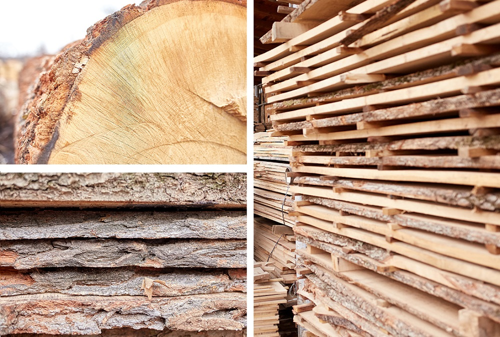
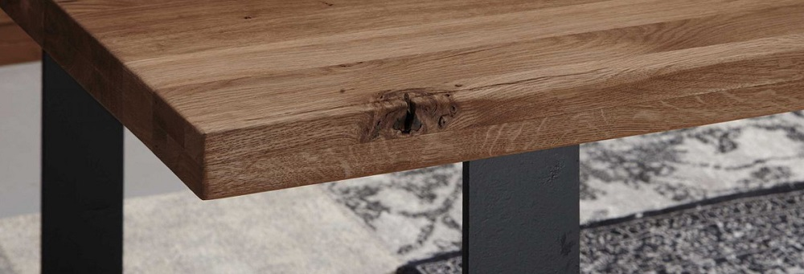

Solid wood
The term “solid wood” is used extensively: Especially in the industrial sector or when buying furniture one comes across “solid wood”. But not all wood is equally solid. What then solid wood actually means? What degree of requirements do solid woods have to meet? And are there uniform quality standards?
Definition: what is solid wood?
Solid wood refers to wood products in which the wood can be assigned to a tree species (e.g. beech, oak or pine). We also speak of pure wood here. Such woods are usually naturally processed, i.e. mechanical or chemical means are not used in the treatment. In order to be able to process solid wood, certain work steps are necessary: For further use, wooden cross-sections or panels are carved out of the tree trunk and then cut to size and separated into lamellas and boards for industry.

From tree to table: this is how furniture is made from solid wood
But how is solid wood furniture made in detail? Contrary to what one might initially assume, wooden furniture is not carved out of the trunk in one piece. Instead, wooden panels are created from the dried natural wood, which are firmly glued together and thus permanently connected to one another. The prerequisite is that the wood has the same cross-section, the same length and also the same type of wood. If the dried wooden elements are now put together, a laminated wood panel is created, from which a solid piece of furniture can now be made.

Quality criterion solid wood: quality classes and more
From the foregoing we know that wood products made from solid wood must meet certain criteria in order to be considered the quality product that solid wood stands for. In the case of solid wood products, all parts of a wood species must be assignable. That means: all parts must be made of the same solid wood.
However, there is an exception for furniture: the rear walls of cupboards or bottom compartments of drawers are excluded. A cabinet made of solid oak with drawer bottoms or a back wall made of wood composite (plywood or MDF) can still carry the quality criterion “solid wood”. For furniture that is advertised with the attribute “solid”, the fronts, side panels and top panels must be made of solid wood. If individual parts are not made of solid wood, one speaks of "partially solid".
Important: Veneers, chipboard or MDF panels are not solid wood.
Checklist: How do you recognize solid wood?
Solid wood can usually be clearly identified if you know what to look out for:
| Criteria | Description |
|---|---|
| Weight | Solid wood is significantly heavier than plywood or MDF. Therefore, the weight of a piece of furniture already allows conclusions to be drawn about the quality. |
| Grain and wood appearance | Solid wood furniture is a natural product. No two pieces of wood are alike, so each section looks different. A regular pattern of wood and characteristic knotholes, which repeatedly stretch across the surface in the same shape, are indications of a replica. Solid wood is always individual! |
| A look at the edges | A look at the edges helps to distinguish solid wood from veneer or a replica. With real solid wood furniture, the wood pattern continues on the edge - you can see that the wood structure "continues". This can be grasped with all senses: Simply run your finger over the edges and examine the wood image and check for completeness. If edges made of PVC are glued on, this indicates that it is not solid wood. |
With a little practice and the right know-how, pieces of furniture made from solid wood can be clearly identified.

Conclusion: solid wood as a durable and sustainable raw material
Robust, stable and extremely durable - solid real wood is a long-lasting and reliable companion. As an organic and renewable raw material, this natural product is very versatile and offers numerous advantages. Various finishing methods, such as oiling and varnishing, bring out the natural beauty of wood individually.